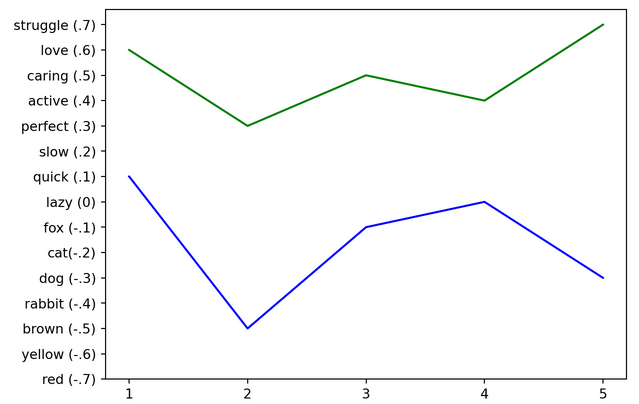
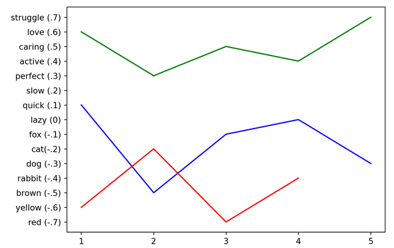

Overview
Have you seen that LLMs (large language models like ChatGPT) are being used to summarize private data that can’t be searched for on the web? You can implement a few tricks and get a model like ChaptGPT to answer questions about or summarize a PDF, personal or company documents, or notes you’ve made over the years.
There are three basic steps:
- Turn your data into something that can be stored and searched through.
Data -> Embedding Model -> Vectors -> Vector Database
- Think of something you want to know and ask for the relevant data.
Question -> Vector Database -> Relevant Data
- Send the question and relevant data to a LLM and get it to answer the question.
Question + Relevant Data -> LLM -> LLM Answers or Summarizes Data
Structured vs Unstructured Data
First, let’s talk about the sort of data that can be analyzed with this method.
For our purposes, there are two types of data: structured and unstructured data. Structured data is like data in a database or an excel document (think rows and columns). And, unstructured data is basically everything else like a word document, website page, or PDF.
The methods we are talking about in this article work best on unstructured data. LLMs have a bad habit of just making things up (hallucinating) and that doesn’t work very well, typically, when you want to know things about structured data.
How bad would it be if you wanted to know a sum, count, etc over some structured data and you received a made up answer? For example, it probably wouldn’t be good if you asked for your average bank account balance over time and got an answer that had no basis in fact. Let’s go make some decisions based on that answer, right?
In contrast, made up answers based on unstructured data tend to not be as bad, and it’s easier to verify if the answer was made up. Though, if made up answers WOULD be bad for your case, then you probably want someone trusted to be providing you with answers. You can still use this method to find the data that you are interested in, but you might not want to implement the last step which gets a summary or answer from the LLM based on your data.
Embeddings
Embeddings are the underlying technology that makes searching data with this method work. So, what is an embedding?
To get a visual we can talk about, let’s take a few words from some sentences and plot them on a graph. “The quick brown fox jumps over the lazy dog” is plotted on the graph below in blue and the quote “Love isn’t a state of perfect caring, it is an active noun like struggle” from Mr. Rogers is plotted in green. I chose to not plot all the words just to make the example easier to see.

This is a simplified example of what is really going on, but see how there is a number next to each word on the graph? When we map a word to a number (fox to -.1 for example), this is an embedding. We have to do this mapping because computers are awesome with numbers and they aren’t really good with anything else.
Not only are we converting a single word to a number, but similar words are embedded close to each other. See how fox, cat, dog, and rabbit (animals) are all close to each other (around -.2) and love, caring, and struggle (emotions) are close to each other (around .6)?
Now, taking this to the next level… If we were to embed “yellow cat and red rabbit”, the embedding will end up visually closer to our “quick brown fox” sentence vs the Mr. Rogers quote. See how the blue and red lines overlap and are closer together than the green line in the plot below?

This is some secret sauce! We can tell that “yellow cat red rabbit” is closer to “quick brown fox” than “love perfect caring” and none of the words in the phrases overlap! We can see on the graph that two of these things are close conceptually. This idea is going to allow us to search our data for concepts that are close to what we are looking for without having to know or match on an exact phrase.
Embedding Model
Great! We know what an embedding is, but how do we get them? Well, an embedding model is used to generate embeddings.
A model in machine learning is basically a program that has been morphed to function in a particular way. You can make a model (program) that can tell if sentences use positive or negative language, if an image has particular objects in the scene, or any of the other wild stuff you might have heard about. The way the model has been morphed typically gives the model type its name (LLM, embedding model, etc).
Let’s think of a model as a box with an open top and bottom. You can put something in the top of the box, the box does its magic, and drops the “answer” out of the bottom.
These sorts of machine learning models are trained (morphed) with these basic steps:
- humans put something in the top of the box and tell the model what the answer should be (what should come out of the bottom of the box)
- the model then gets trained (morphed) until it can reproduce the answer
- repeat a bunch of times with lots of different examples
- the model can now guess what the answer should be when we DON’T tell it what the answer is for a particular input
- when we are impressed with the model’s answers, we can start using the model
In the case of our embedding model, we can put in a sentence, paragraph, article, etc and we get out embeddings. During the training, the model has learned what concepts are close to each other and can generate embeddings that can be compared like we saw in the plots above.
Example Embedding Model
There are a bunch of models that can generate embeddings, but let’s use the current embedding model by OpenAI (the folks who made ChatGPT) as an example. We can give the model our input and it will return a bunch of numbers that look like this (only 14 numbers shown for brevity):
[0.004021138, 0.035306297, -0.00503044, -0.019054601, -0.013294506, 0.023966111, -0.0010671605, 0.0017952082, -0.014104519, -0.033171978, 0.009128722, 0.016495988, 0.002171286, 0.0013315398, ...]I’m going to convert the “quick brown fox” embedding from the plot above to numbers so we can see they are similar (yet simplified) to what OpenAI’s embedding model dropped out:
[0.1, -0.5, -0.1, 0.0, -0.3]Vectors
The embedding model dropped out a bunch of numbers, and this grouping of numbers is called a vector:
[0.004021138, 0.035306297, -0.00503044, -0.019054601, -0.013294506, 0.023966111, -0.0010671605, 0.0017952082, -0.014104519, -0.033171978, 0.009128722, 0.016495988, 0.002171286, 0.0013315398, ...]A vector really is just a group of numbers. We are dealing with vectors that have been generated from an embedding model, so they are special in that the numbers represent concepts. But, ultimately a vector is just a group of numbers.
Vector Database
At this point we have two things that we need to keep track of:
- a piece of data (an article, PDF, notes, etc) (the input to the embedding model)
- the vector that represents that data (the output from the embedding model)
A vector database will allow us to store both of those things, and it will allow us to search through what we have stored. There are a bunch of vector databases that provide various amounts of functionality, but that is the gist of what they do.
Storing Vector Data
The first thing the vector database allows us to do is to store our data.
We can take all of our articles/PDFs/notes/etc, convert them into vectors with an embedding model, and then save both into the vector database. This saves the data we actually care about (the article/PDF/notes) and ties it to the vector representation.
Since the vector and data are tied together now, we can get from a vector to the underlying data that we actually care about. This is important when we start searching the vectors.
Searching Vector Data
The second thing the vector database allows us to do is to search our data.
We can think of something we want to search for (“yellow cat red rabbit” for example), convert it into a vector, and ask the vector database to give us the closest results. The vector database searches the list of stored vectors, gathers a list of close vectors and the data tied to those vectors, and then returns the data we care about (the article/PDF/notes).
So, we will be able to hand a vector to a vector database and ask it to give us the closest 3 results, for example. And then the database will hand us back the 3 closest articles, PDFs, notes, or whatever it is that we have stored.
They can also generally tell us how close the question is to the results they are returning which is really useful.
Let’s say that we are building this for a company and we are storing policy documents (or something like that). If we were to ask the vector database for the closest documents to some policy question we have, we would expect the results to be close to what we are asking. So, maybe a closeness score of 99%.
But, if we were to ask the vector database where the closest taco shop is, we would expect the results to be very unrelated. The database would still return us some results (from our earlier example, if “quick brown fox” wasn’t in our database and we asked for “yellow cat”, the database would still return “love perfect caring” as the closest result), but it wouldn’t be very close. So, maybe a closeness score of 20%?
This closeness score can then be used to determine if results should be returned to the user, or if we should just return “sorry, we don’t know about that”. We could set a threshold of 90%, maybe, to determine if the question being asked has anything to do with what we have stored.
Steps 1 and 2
At this point we know enough to restate the first two steps that were laid out in the overview. The first two steps go like this:
Turn your data into something that can be stored and searched through
- take some unstructured data (from the example: our “quick brown fox” sentence and quote from Mr. Rogers)
- pass it in to an embedding model that will embed similar information as close together
- the embedding model will drop out a vector per piece of data that we pass in
- the vectors and data can then be stored in a vector database
Think of something you want to know and ask for the relevant data
- take your question (from the example: “yellow cat red rabbit”)
- pass it into the embedding model so it will embed the information in the same way as our data from step 1
- the embedding model will drop out a vector
- ask the vector database to return any data that is close to our question vector
Super cool, right?!
We have our data in a form that we can search, and we can find relevant data whenever we have something we want to find. This is a concept search and not a keyword search. So it doesn’t matter if what we are searching for has the same words as what we ask…the concepts just have to be close.
But, what if we wanted the computer to summarize the information or use the relevant data and answer our question? This is where retrieval augmented generation (RAG) comes in to play.
Retrieval Augmented Generation (RAG)
Large language models (LLMs) like ChatGPT have been trained on a bunch of human conversations and concepts from sources like Wikipedia, Reddit, and anything public on the internet. This means that you can probably ask ChatGPT “what is the airspeed velocity of an unladen swallow”, and it will tell you that it is a quote from the movie Monty Python and the Holy Grail. Someone, and likely many someones, have talked about this quote online, and ChatGPT is able to figure this out.
But, ChatGPT has only been trained on PUBLIC data. This means that if you ask it a policy question about something specifically at your company, it won’t have any idea. It might still answer (and confidently!), but that is a different problem.
What we can do, though, is give the LLM some context around our question and push it to answer from what we give it as context.
This is what retrieval augmented generation does. It implies that we have retrieved some data (like in step 2 from our method) and are augmenting the answer from the LLM to be based on the data we are giving it.
Let’s talk about how we might do that.
Prompting
When you ask a LLM something, this is called a “prompt”. Not only can you directly ask it something, but you can add additional instructions to help drive the LLM’s output to what you want. For example, if I ask:
Hey ChatGPT, what is the airspeed velocity of an unladen swallow?
Can you answer as a pirate might?then ChatGPT might answer like (and it totally did answer like this):
Arrr matey! The airspeed velocity of an unladen swallow be a tricky matter, ye see.
If ye be talkin' 'bout a European swallow, it be 'round 20 miles per hour, but if ye be chattin' 'bout an African swallow, well, that be a whole different tale.
Pirates be knowin' their birds, but these winged critters be movin' faster than a ship in full sail, savvy? Yarrr!Prompts can be constructed in many different ways and they can get extremely complicated. Sometimes it can take a few tries (or a bunch of trial and error) to get the LLM to “understand” the prompt and give a good output.
Let’s keep going with Monty Python and the Holy Grail and see if we can generate a prompt that can give us an answer based on a paragraph from Wikipedia. We can use the first paragraph from the “Development” section in the Wikipedia article and see if our heros ever got the grail. A prompt using this idea might look like the following code block.
I grouped the “information” and the “question” into their own sections (as indicated by the <information> and <question> tags) and then told the LLM to use those sections.
Use the following information to answer the question.
<information>
In January 1973 the Monty Python troupe wrote the first draft of the screenplay.
Half of the material was set in the Middle Ages and half was set in the present day.
The group decided to focus on the Middle Ages, focusing on the legend of the Holy Grail.
By the fourth or fifth draft, the story was complete, and the cast joked that the fact that the Grail was never retrieved would be "a big let-down ... a great anti-climax".
Graham Chapman said a challenge was incorporating scenes that did not fit the Holy Grail motif.
</information>
<question>
Did the heros in Monty Python and the Holy Grail ever get the grail?
</question>We can copy and paste that exact thing into ChatGPT to see what it will do. This is what it returned for me:
No, the heroes in Monty Python and the Holy Grail did not retrieve the Holy Grail.
The cast joked that the fact that the Grail was never retrieved would be "a big let-down ... a great anti-climax."
So, the film plays on this idea, and despite the characters' quest for the Holy Grail, they do not ultimately succeed in obtaining it.This is great! The LLM answered from the information we provided. We now have a pattern we can use to pass in information and a question to a LLM to get an answer.
Sending Private Information to a Public LLM
You might be wondering if it is a good idea to send your private information to a public LLM. It probably isn’t. You don’t know what that company might be doing, but they are probably storing everything you send to the LLM.
Some of these companies that make public LLMs also have private ones that won’t store your private information. These private LLMs have policies in place and are constructed in such a way as to not direct your information to their storage system. This is the way to go if you are worried about your private information being stored.
Step 3
This is it. We now know how to get a computer to answer a question we have about our data. Let’s restate the last step in this method:
Send the question and relevant data to a LLM and get it to answer the question
- construct a prompt that includes the question and relevant data that we found in Step 2
- send the prompt to a LLM
- the LLM will spit out an answer
- and there was much rejoicing
Final Thoughts
Hopefully you walk away from this article with a pretty good idea of how you could store your data, search it for something relevant, and get a LLM to answer or summarize the result.
We talked about embeddings (which are super cool), a bit about how machine learning models are trained, vector databases, and retrieval augmented generation. While you might not be implementing something like this yourself, hopefully this gives you some ideas of what is possible.
Cheers!
Comments
Leave a comment: